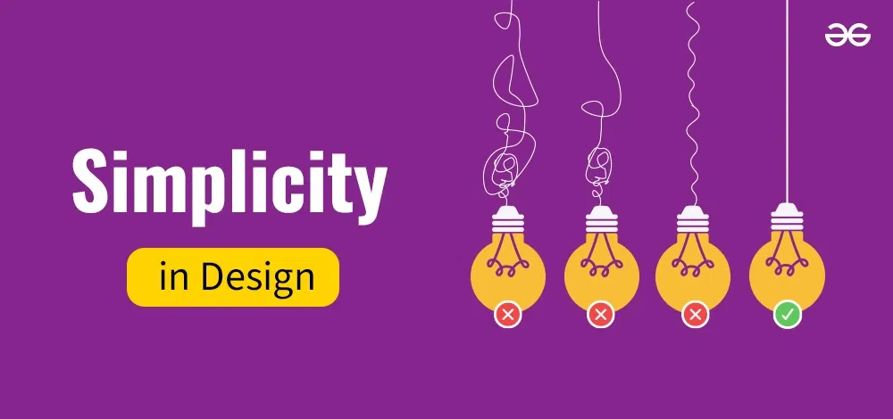

The Power of Simplicity in Design

Simplicity is the ultimate sophistication. In design, simplicity can bring clarity and focus to your work. In this post, I’ll talk about why simplicity matters and how to achieve it in design...
In design, simplicity allows the user to focus on the core purpose of a website or product. When you remove distractions, users are more likely to engage with the content and find what they need. A simple layout also improves usability, which is why minimalistic design trends are so popular today. Achieving simplicity in design doesn’t mean removing all elements, but rather focusing on what’s necessary and eliminating unnecessary complexities. Use whitespace, clear typography, and a clean color palette to guide the user’s eyes. Keep it clean, keep it simple. Simple design can lead to higher user satisfaction because it makes the interface more intuitive and easier to navigate. Removing clutter also enhances the overall user experience, as users can find what they need quickly and without frustration. The goal of simplicity is not just about aesthetics but also about enhancing functionality and usability. When done right, it makes the user feel more comfortable and in control, allowing them to enjoy a seamless experience from start to finish. Effective simplicity creates a sense of trust and clarity in the design, making it easier for users to engage and interact with the product or website. Ultimately, simplicity should be prioritized not just for its visual appeal, but for its ability to improve user retention and satisfaction over time.